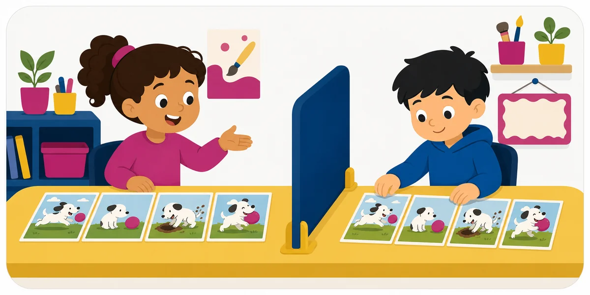

Activity 65 · Arts & Design
Comic-Strip Reconstruction

Materials Matching comic panels.
What to describe
The Describer reconstructs a labeled process diagram — the stages of a life cycle or a build — panel by panel from words alone.
Roles
How a round works
Make it harder or easier
Harder
Describe using only shape, position, and color words — no gestures, no questions.
Easier
Allow yes/no questions and agree on a shared starting shape or anchor point.
Reflect
Skills
Standards & alignment
TEKS Fine Arts / ELAR TEKS · describing, creating & precise descriptive language (confirm grade code)
NGSS NGSS SEP-8: Obtaining, Evaluating & Communicating Information